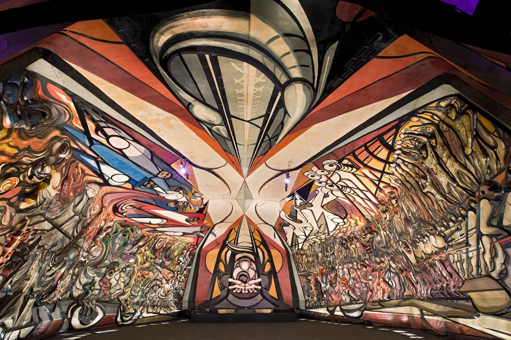
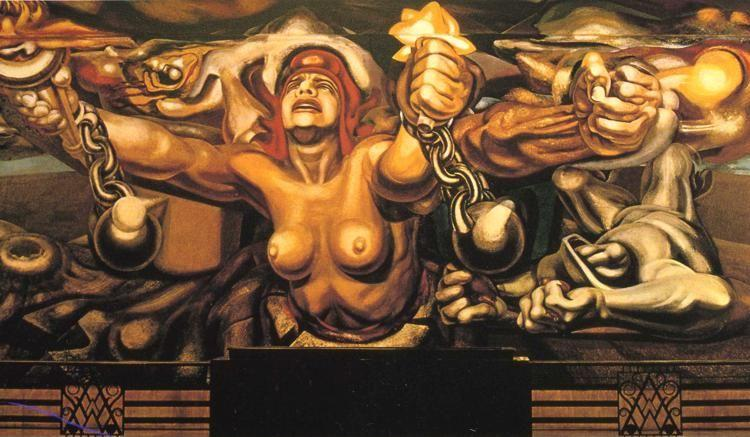
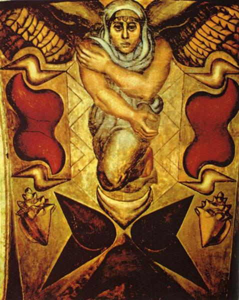
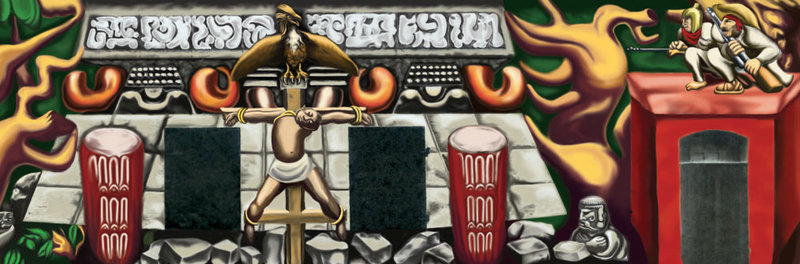

The southern wall of this piece, shown here, depicts the Chilean indigenous peoples in their struggle for freedom and independence from the European Conquistadores.

The March of Humanity 1971
This project, the largest mural in the world, comprises the interior and exterior of an entire building, as well as the walls surrounding it. An endless sea of people march from a past riddled with negative symbolism towards the triumph of Revolution. The ceiling depicts an archetypical man and woman: the Adam and Eve of a new society.

New Deomcracy 1945
This mural depicts a woman with exposed breasts, wearing a revolutionary Phrygian cap, raising her arms from the chains that had enslaved her. She looks to the skies with a pained expression, recalling the horrors of the war. In one hand she carries a torch with freedom's flame and in the other, a white flower.

The Elements 1924
This piece depicts a monumental winged female surrounded by representations of the four elements. Reflecting Siqueiros's study in Europe, the work combines elements of Byzantine icons in the sandy-colored background, with a sculpturesque figure inspired by Renaissance painter Masaccio.

Tropical America 1932
A crucified native appears in the very center of the work. A menacing eagle, a clear symbol for the United States, is perched atop the cross. Behind the Indian, a Mayan temple in the process of being engulfed by tropical plants, forever to be forgotten. On the top right, watching the tragic spectacle, a Mexican and a Peruvian, are shown armed and ready to defend their land and culture from the apparently inevitable victory of American capitalism culture over their own heritage. Perhaps unsurprisingly, the mural was hostilely received and whitewashed within two years.